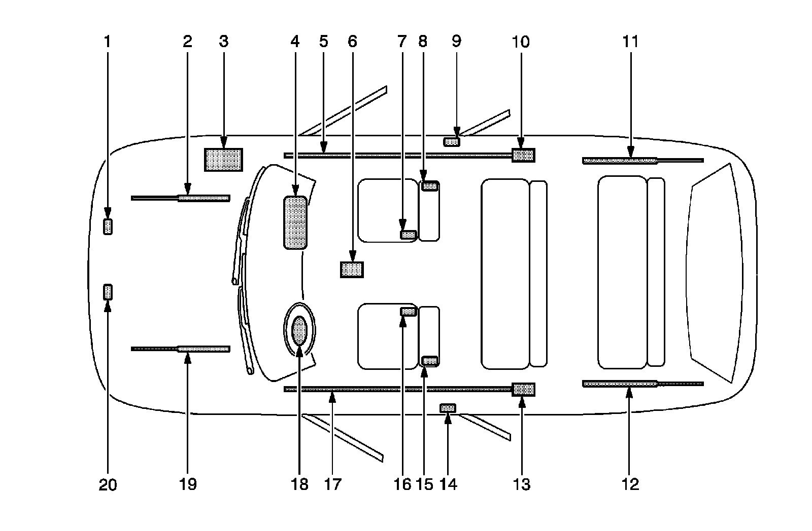

Air Bag Systems: Locations
SIR Identification Views
The SIR Identification Views shown below illustrate the approximate location of all SIR components available for the vehicle. This will assist in determining the appropriate SIR Disabling and Enabling for a given service procedure, refer to SIR Disabling and Enabling (Service and Repair) .
Cadillac SRX

1 - Right Front End Sensor-Located on the front of the vehicle in the engine compartment
2 - Front Hood Assist Rod-A gas shock located under the front hood on the passenger side
3 - Vehicle Battery-Located under the hood on the right side
4 - I/P Air Bag-Located at the top right under the instrument panel
5 - Right Roof Rail Air Bag-Located under the headliner, extending from the passenger front windshield pillar all the way to rear of passenger rear door
6 - Sensing and Diagnostic Module (SDM)-Located underneath the vehicle carpet under the center console
7 - Seat Belt Pretensioner-Located on the inboard side of the passenger seat
8 - RF Side Impact Air Bag-Located on the seat back of passenger seat
9 - Side Impact Sensor (SIS)-Located under the center pillar trim near the bottom on passenger side of vehicle
10 - Inflator Module for Right Roof Rail Air Bag-Located behind passenger rear door opening under trim attach to C pillar
11 - Rear Hatch Assist Rod-A gas shock is located under the rear hatch on the passenger side
12 - Rear Hatch Assist Rod-A gas shock is located under the rear hatch on the driver side
13 - Inflator Module for Left Roof Rail Air Bag-Located behind driver rear door opening under trim attach to C pillar
14 - Side Impact Sensor (SIS)-Located under the center pillar trim near the bottom on driver side of vehicle
15 - LF Side Impact Air Bag-Located on the seat back of driver seat
16 - Seat Belt Pretensioner-Located on the inboard side of the driver seat
17 - Left Roof Rail Air Bag-Located under the headliner, extending from the driver front windshield pillar all the way to rear of driver rear door
18 - Steering Wheel Air Bag-Located on the steering wheel
19 - Front Hood Assist Rod-A gas shock located under the front hood on the driver side
20 - Left Front End Sensor-Located on the front of the vehicle in the engine compartment